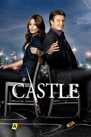

ალბათ იცით დეტექტიური სერიალი “ქასლი". ცნობილია რომ მთავარი როლის შემსრულებლები რბილად რომ ვთქვათ, ერთმანეთს ვერ იტანდნენ, გამუდმებით ჩხუბობდნენ და ამის გამო კატიჩს ბევრჯერ უტირია კიდეც. მსახიობს სერიალიდან წასვლაც უნდოდა, მაგრამ საბედნიეროდ რეჟისორმა გადააფიქრებინა.
